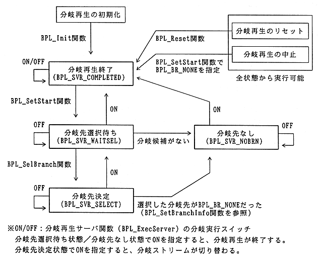

Table 3.1 Branch playback status
Status | Description |
|---|---|
Branch playback ended | Branch playback ended. |
Branch destination selection waiting | Branch candidates are prefetched, but no branch destination is selected. |
Branch destination decision | A branch destination was selected from among the branch candidates. |
No branch destination | There are no branch candidates or branch destinations for the current stream. |
